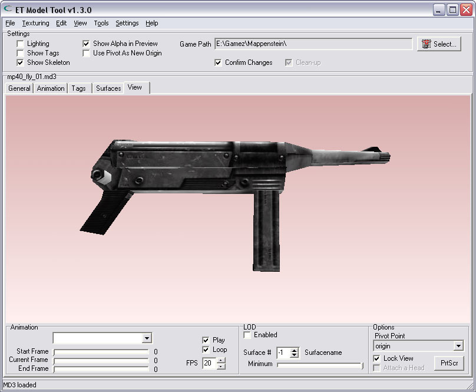
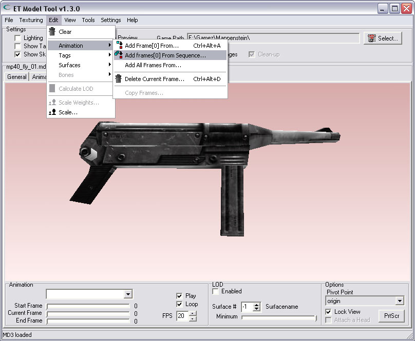
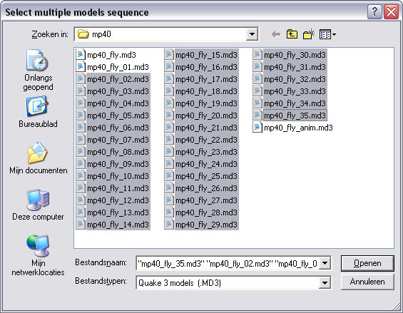
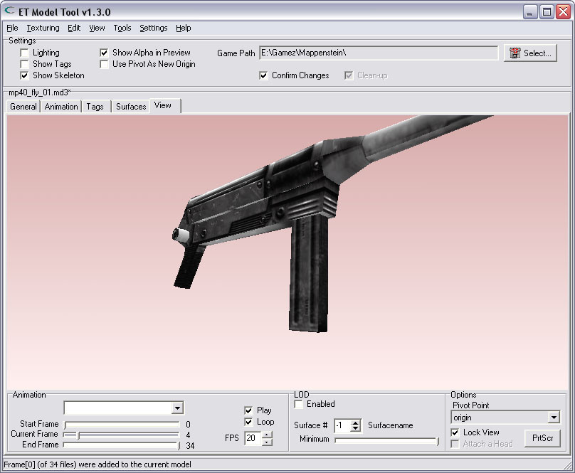
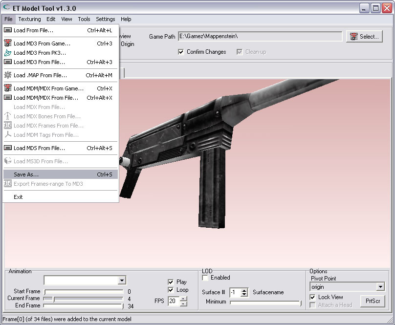
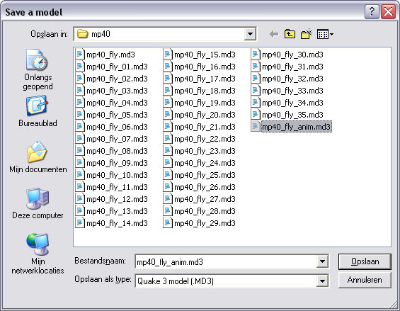

| Expand an MD3 with frames from a sequence of MD3-files | |
| Suppose You want to create an animated MD3, but Your 3D-modeling software does not support the export of animated MD3-files, only exporting single-frame MD3-files is possible.. This tool lets You combine a sequence of MD3-files into 1 animated MD3. A sequence of MD3-files needs to be using numbered filenames, like: file0.md3, file1.md3 ... file9.md3, file10.md3. Every one of these files must contain the model in a different pose, each file holds the next frame of an animation. All frames together form 1 complete animation. Maybe Your 3D-modeling software can save all the neccesary files automaticly. If not, You must save, and name the (numbered) files individually.. Here is an example of a rotating MP40, combined from 35 frames (from 35 different MD3-files). In each frame the gun is rotated 10 degrees, so when the animation runs the gun spins from 0 to 350 degrees, and then starts at 0 degrees again, a complete 360.. First things to do is load the first file manually. The first file contains the first frame of the animation. It doesn't matter how the first file is called, just load it.. ;-) In this demonstration the first file i need is called: mp40_fly_01.md3 | |
|  | |
| Select the option from the menu | |
| Select the choice from the menu: "Add frames[0] from sequence..." | |
|  | |
| Select the rest of the sequence that must be added | |
| The following dialog lets You choose all the needed files that complement the animation at once. To select multiple files: just select the first file like You normally do, then hold the SHIFT-key and select the last file from the sequence.. The tool will load all the files, sort them on their sequencial filename-number, and add the first frame of every file to the MD3 You had already loaded. Note: Be sure NOT to select the first frame now, (file called mp40_fly_01.md3), because otherwise that frame will be doubled in the end-animation, and that is probably not what You want.. | |
|  | |
| Watch the animation | |
| After the tool is finished loading all the files, and has combined all the files into 1 animated MD3, You immediately see the animation playing. Note that the Framenumber-sliders for 'Start Frame' & 'End Frame' on the bottom of the 'View'-Tab have also been set to the proper animation-length. The Start-Frame is set to 0 and the End-Frame is set to 34, that's 35 frames.. | |
|  | |
| Save the animated MD3 | |
| Now You only need to save the MD3. Select the "Save As..." option from the menu. The filetype of the file You can save is now automaticly set to MD3. You have nothing to do but to enter the name of Your new model-file. | |
|  | |
| The name i have chosen is: mp40_fly_anim.md3 | |
|  | |
| Restrictions | |
| All files that are used to combine the final MD3 must contain the same model. That is, the files must have: You will get an error-message if one of those criteria is not met, and no frame will be added. | |
| Thanks | |
| Thanks to eCo|ischbinz for creating all the files of the rotating MP40. www.eco-fairplay.com | |